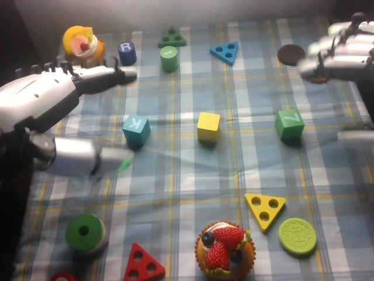

RoboCOIN · Airbot MMK2 · stack_block/episode_000006
Episode 000006

Annotation
From the dedicated visual review of this video (humanoid_action_v1). Plain text · JSON
Observed outcome
- Status
success_visible
- Description
Visible three-cube tower at the clip end: the yellow cube at the bottom, the blue K cube on it, and the green Z cube on the blue cube. The green cube sits slightly offset but upright and stable after the right hand opens and withdraws. The right hand has not completely left the frame at frame 279.
Hand roles
- Left
Robot's left hand (image-left): the only active hand in frames 0-170. Curls its fingers over the blue K cube with the thumb pad at its side, lifts it, carries it to the yellow cube, lowers it onto the top, opens and withdraws. After frame about 160 it rests low and open in the foreground and does not support or stabilize the stack.
- Right
Robot's right hand (image-right): open and idle at the upper right in frames 0-150. From about frame 150 it reaches to the green Z cube, closes fingers over the top with the thumb pad against the far side (about 176-186), lifts and carries it (about 188-200), lowers it onto the blue cube (about 206-246), opens (about 256-270) and withdraws.
Coordination
Strictly sequential, no hand-to-hand transfer or simultaneous manipulation: the left hand finishes its placement and releases (about frame 133-150) before the right hand starts its pick. The left hand's cube-on-cube placement forms the base (yellow plus blue) for the right hand's green cube.
Robot-side evidence
- Conclusion
The hand at image-left is the robot's left hand and the hand at image-right is the robot's right hand; image left matches robot left in the head view.
- Evidence
- Telemetry (observation.state joint names from info.json): left_arm joints 1-6 move mainly in frames 0-70 and 140-170 and left_hand joints change in frames 25-60 (closing) and 120-160 (opening), the periods when the image-left hand grasps and releases the blue cube; right_arm and right_hand joints are almost unchanged until about frame 150 and then move in frames 150-280 when the image-right hand picks and stacks the green cube.
- cam_left_wrist_rgb at frames 50 and 100 shows the blue cube beside the left hand and then on the yellow cube; cam_right_wrist_rgb at frames 190 and 230 shows the green cube held beside the right hand fingers and thumb.
- cam_front_rgb sampled at frames 50, 100, 190 and 230 shows the same two-handed sequence viewed from across the table, with the one hand at work early and the other late.
- Publisher instruction assigns the first (centre) placement to the left hand and the second to the right hand, matching the visible order; not used as sole evidence.
- Confidence
high
Chronology
| Frames | Observation |
|---|---|
| 0–23 | Initial state: yellow cube stands in the middle, blue cube marked K at image-left of it, green cube marked Z at image-right; many unrelated toys (R can, green and blue triangles, cupcake, rings, cookie) are around. The robot's left hand (image-left, open, thumb pad extended toward the K cube) is already near the blue cube; the right hand is open at the upper-right edge. The left arm moves in, lowering the hand so the thumb pad reaches the near side of the blue cube. |
| 24–46 | Left hand settles onto the blue K cube: its curled fingers come over the top/back and the thumb pad sits beside the near face. Hand-joint telemetry shows closing from about frame 30 to 55. The cube is pinched by about frame 40-46 (left wrist camera at frame 50 shows the blue cube held beside the fingers). The right hand stays open and static. |
| 47–70 | Left arm lifts the blue cube clear of the table (frame 64 shows it raised off the cloth, held between thumb pad and fingers) and carries it toward the yellow cube at image-centre, moving the hand rightward. |
| 71–96 | Cube is held above and then lowered onto the top of the yellow cube (frames 72-84 show the blue cube above and touching the yellow cube; by frame 96 it sits on the yellow cube while the hand still grips it). |
| 97–132 | Left hand holds the blue cube on top of the yellow cube almost motionless (arm telemetry nearly constant) with thumb pad still against the cube side; slight settling only. |
| 133–150 | Left hand opens (hand-joint sum falls from about frame 125 to 150) and releases the cube, which stays on the yellow cube (frames 138-150); the hand begins withdrawing and the head camera view tilts up slightly as the left arm raises. |
| 151–170 | Left hand pulls back and up toward image-left and stays low and open in the foreground for the rest of the clip; the head view tilts back. The blue K cube remains on the yellow cube. Right hand begins moving from the upper right toward the green Z cube. |
| 171–186 | Right hand lowers beside the green cube with fingers coming over the top and the thumb pad on its far-right side, and closes on the green cube (frames 176-184; right wrist camera at frame 190 shows the green cube held between fingers and thumb). Hand-joint telemetry shows closing between about 170 and 190. |
| 187–200 | Right arm lifts the green cube off the table (frames 188-196, motion-blurred) and carries it up and left toward the stacked cubes. |
| 201–240 | Green cube is carried over the blue cube and lowered onto its top (frames 206-236; green cube sits on the blue cube by about frame 236-246), the right hand holding it from the upper left with the thumb pad at the lower right. |
| 241–258 | Right hand holds the green cube on the stack while it settles; fingers start to loosen by about frame 256. |
| 259–279 | Right hand opens (hand-joint telemetry shows opening from about 255 to 280) and withdraws toward the upper right (frames 264-279, with blur); the left hand moves slightly at the end. At frame 279 the tower stands: yellow cube at the bottom, blue K cube in the middle, green Z cube on top, the green cube slightly offset but upright and stable. The right hand has not entirely cleared the frame. |
Clip selection
Complete single-task clip retained: the left hand places the blue K cube on the yellow cube, then the right hand places the green Z cube on the blue cube. These are ordinary phases of one stacking task, so the full video is kept without cropping or a first_substep.
Differences from the publisher annotation
- The publisher instruction says the right hand puts 'cylindrical building blocks' on top; the visible block placed on top is a green cube marked Z, not a cylinder (a green cylinder and a blue cylinder marked R stay untouched at the top of the scene).
- The scene annotation lists the green block in the front-left, red block front-left, blue block front-right and a purple block and glasses case in the back-left; in the head view the blue cube (K) is at image-left, the green cube (Z) is at image-right, and the glasses case and purple block are not involved. The scene annotation does not match the objects handled.
- Subtask labels call the end effectors 'grippers'; the robot has five-finger dexterous hands.
- Timeline: 'Place the blue block' spans 47-146, consistent visually with lift and carry 47-96, near-static hold 97-132 and release 133-150, so the label runs a little before the visible release finishes. 'Grasp the green block' 147-186 includes the right hand reaching from about 150 and closing at about 176-186; 'Place the green block' 187-263 covers lift, carry and lowering, with release starting about 256 and finishing near 270. The 'End' label starts at 264 while the right hand is still opening and withdrawing until 279.
Uncertainties
- Exact finger contact points on the blue and green cubes are partly occluded in the head view; 'curled fingers with the thumb pad at the side' is the visible configuration, and the cube may also touch the palm side.
- The left hand's release is inferred from the opening hand telemetry and the hand's rise away from the cube at frames 144-154; the cube is visibly seated on the yellow cube by frame 144.
- The green cube is slightly rotated and offset on the blue cube at frames 246-279; the tower looks stable but its long-term stability is not shown.
- The right hand has not fully cleared the frame at the end; blur at frames 188-196 and 272-279 obscures finger detail.
Complete review record action_review.json
{
"prompt_protocol": "humanoid_action_v1",
"prompt_protocol_note": "RoboCOIN Airbot MMK2 is a dual-arm robot with five-finger dexterous hands, not a Humanoid Everyday or NVIDIA GR1 dataset. humanoid_action_v1 is applied by analogy: robot-relative left/right hand, separate per-hand roles, coordination order, per-hand contact changes and the actual end state, with the shared constraint sentence appended verbatim.",
"prompt_provenance": "visually_authored_from_video_and_initial_frame",
"dataset": "RoboCOIN/Airbot_MMK2_stack_block",
"task": "stack_block",
"episode_id": "episode_000006",
"generation_camera": "cam_head_rgb (robot first-person head camera)",
"source_video": "../../original/videos/chunk-000/observation.images.cam_head_rgb/episode_000006.mp4",
"generation_video": "../video.mp4",
"conditioning_first_frame": "../first_frame.png",
"action_prompt": "../actiongeneration_prompt.txt",
"source_frame_count": 280,
"fps": 30,
"resolution": [
640,
480
],
"selected_source_frame_start": 0,
"selected_source_frame_end_exclusive": 280,
"selection_reason": "Complete single-task clip retained: the left hand places the blue K cube on the yellow cube, then the right hand places the green Z cube on the blue cube. These are ordinary phases of one stacking task, so the full video is kept without cropping or a first_substep.",
"usable_prompt": "The robot's left hand closes its thumb and curled fingers around the blue K cube, lifts it, and sets it on top of the yellow cube, then opens and withdraws. Afterward the right hand reaches in, grips the green Z cube between its fingers and thumb, lifts it, carries it over, and sets it on top of the blue cube, then opens and pulls back while the left hand stays idle, leaving a three-cube tower. Keep the camera fixed; preserve robot geometry, physically valid joint motion, and normal gripper opening and closing.",
"chronology": [
{
"frames": [
0,
23
],
"observation": "Initial state: yellow cube stands in the middle, blue cube marked K at image-left of it, green cube marked Z at image-right; many unrelated toys (R can, green and blue triangles, cupcake, rings, cookie) are around. The robot's left hand (image-left, open, thumb pad extended toward the K cube) is already near the blue cube; the right hand is open at the upper-right edge. The left arm moves in, lowering the hand so the thumb pad reaches the near side of the blue cube."
},
{
"frames": [
24,
46
],
"observation": "Left hand settles onto the blue K cube: its curled fingers come over the top/back and the thumb pad sits beside the near face. Hand-joint telemetry shows closing from about frame 30 to 55. The cube is pinched by about frame 40-46 (left wrist camera at frame 50 shows the blue cube held beside the fingers). The right hand stays open and static."
},
{
"frames": [
47,
70
],
"observation": "Left arm lifts the blue cube clear of the table (frame 64 shows it raised off the cloth, held between thumb pad and fingers) and carries it toward the yellow cube at image-centre, moving the hand rightward."
},
{
"frames": [
71,
96
],
"observation": "Cube is held above and then lowered onto the top of the yellow cube (frames 72-84 show the blue cube above and touching the yellow cube; by frame 96 it sits on the yellow cube while the hand still grips it)."
},
{
"frames": [
97,
132
],
"observation": "Left hand holds the blue cube on top of the yellow cube almost motionless (arm telemetry nearly constant) with thumb pad still against the cube side; slight settling only."
},
{
"frames": [
133,
150
],
"observation": "Left hand opens (hand-joint sum falls from about frame 125 to 150) and releases the cube, which stays on the yellow cube (frames 138-150); the hand begins withdrawing and the head camera view tilts up slightly as the left arm raises."
},
{
"frames": [
151,
170
],
"observation": "Left hand pulls back and up toward image-left and stays low and open in the foreground for the rest of the clip; the head view tilts back. The blue K cube remains on the yellow cube. Right hand begins moving from the upper right toward the green Z cube."
},
{
"frames": [
171,
186
],
"observation": "Right hand lowers beside the green cube with fingers coming over the top and the thumb pad on its far-right side, and closes on the green cube (frames 176-184; right wrist camera at frame 190 shows the green cube held between fingers and thumb). Hand-joint telemetry shows closing between about 170 and 190."
},
{
"frames": [
187,
200
],
"observation": "Right arm lifts the green cube off the table (frames 188-196, motion-blurred) and carries it up and left toward the stacked cubes."
},
{
"frames": [
201,
240
],
"observation": "Green cube is carried over the blue cube and lowered onto its top (frames 206-236; green cube sits on the blue cube by about frame 236-246), the right hand holding it from the upper left with the thumb pad at the lower right."
},
{
"frames": [
241,
258
],
"observation": "Right hand holds the green cube on the stack while it settles; fingers start to loosen by about frame 256."
},
{
"frames": [
259,
279
],
"observation": "Right hand opens (hand-joint telemetry shows opening from about 255 to 280) and withdraws toward the upper right (frames 264-279, with blur); the left hand moves slightly at the end. At frame 279 the tower stands: yellow cube at the bottom, blue K cube in the middle, green Z cube on top, the green cube slightly offset but upright and stable. The right hand has not entirely cleared the frame."
}
],
"anatomical_side_evidence": {
"conclusion": "The hand at image-left is the robot's left hand and the hand at image-right is the robot's right hand; image left matches robot left in the head view.",
"evidence": [
"Telemetry (observation.state joint names from info.json): left_arm joints 1-6 move mainly in frames 0-70 and 140-170 and left_hand joints change in frames 25-60 (closing) and 120-160 (opening), the periods when the image-left hand grasps and releases the blue cube; right_arm and right_hand joints are almost unchanged until about frame 150 and then move in frames 150-280 when the image-right hand picks and stacks the green cube.",
"cam_left_wrist_rgb at frames 50 and 100 shows the blue cube beside the left hand and then on the yellow cube; cam_right_wrist_rgb at frames 190 and 230 shows the green cube held beside the right hand fingers and thumb.",
"cam_front_rgb sampled at frames 50, 100, 190 and 230 shows the same two-handed sequence viewed from across the table, with the one hand at work early and the other late.",
"Publisher instruction assigns the first (centre) placement to the left hand and the second to the right hand, matching the visible order; not used as sole evidence."
],
"confidence": "high"
},
"arm_roles": {
"left": "Robot's left hand (image-left): the only active hand in frames 0-170. Curls its fingers over the blue K cube with the thumb pad at its side, lifts it, carries it to the yellow cube, lowers it onto the top, opens and withdraws. After frame about 160 it rests low and open in the foreground and does not support or stabilize the stack.",
"right": "Robot's right hand (image-right): open and idle at the upper right in frames 0-150. From about frame 150 it reaches to the green Z cube, closes fingers over the top with the thumb pad against the far side (about 176-186), lifts and carries it (about 188-200), lowers it onto the blue cube (about 206-246), opens (about 256-270) and withdraws."
},
"coordination": "Strictly sequential, no hand-to-hand transfer or simultaneous manipulation: the left hand finishes its placement and releases (about frame 133-150) before the right hand starts its pick. The left hand's cube-on-cube placement forms the base (yellow plus blue) for the right hand's green cube.",
"observed_outcome": {
"status": "success_visible",
"description": "Visible three-cube tower at the clip end: the yellow cube at the bottom, the blue K cube on it, and the green Z cube on the blue cube. The green cube sits slightly offset but upright and stable after the right hand opens and withdraws. The right hand has not completely left the frame at frame 279."
},
"source_annotation": {
"publisher_instruction": "place the square building blocks in the center with left hand and put the cylindrical building blocks on top with right hand.",
"subtask_timeline": [
{
"start_frame": 0,
"end_frame_inclusive": 46,
"subtask": "Grasp the blue build blocks with the left gripper"
},
{
"start_frame": 47,
"end_frame_inclusive": 146,
"subtask": "Place the blue build blocks on the yellow build block with the left gripper"
},
{
"start_frame": 147,
"end_frame_inclusive": 186,
"subtask": "Grasp the green build blocks with the right gripper"
},
{
"start_frame": 187,
"end_frame_inclusive": 263,
"subtask": "Place the green build blocks on the blue build block with the right gripper"
},
{
"start_frame": 264,
"end_frame_inclusive": 279,
"subtask": "End"
}
],
"scene_annotation": "green block is in the front-left, red block is in the front-left, blue block is in the front-right, yellow block is in the center, purple block is in the back-left, glasses case is in the back-left",
"use": "Used only as an annotation starting point; chronology comes from the decoded frames."
},
"source_annotation_discrepancies": [
"The publisher instruction says the right hand puts 'cylindrical building blocks' on top; the visible block placed on top is a green cube marked Z, not a cylinder (a green cylinder and a blue cylinder marked R stay untouched at the top of the scene).",
"The scene annotation lists the green block in the front-left, red block front-left, blue block front-right and a purple block and glasses case in the back-left; in the head view the blue cube (K) is at image-left, the green cube (Z) is at image-right, and the glasses case and purple block are not involved. The scene annotation does not match the objects handled.",
"Subtask labels call the end effectors 'grippers'; the robot has five-finger dexterous hands.",
"Timeline: 'Place the blue block' spans 47-146, consistent visually with lift and carry 47-96, near-static hold 97-132 and release 133-150, so the label runs a little before the visible release finishes. 'Grasp the green block' 147-186 includes the right hand reaching from about 150 and closing at about 176-186; 'Place the green block' 187-263 covers lift, carry and lowering, with release starting about 256 and finishing near 270. The 'End' label starts at 264 while the right hand is still opening and withdrawing until 279."
],
"uncertainties": [
"Exact finger contact points on the blue and green cubes are partly occluded in the head view; 'curled fingers with the thumb pad at the side' is the visible configuration, and the cube may also touch the palm side.",
"The left hand's release is inferred from the opening hand telemetry and the hand's rise away from the cube at frames 144-154; the cube is visibly seated on the yellow cube by frame 144.",
"The green cube is slightly rotated and offset on the blue cube at frames 246-279; the tower looks stable but its long-term stability is not shown.",
"The right hand has not fully cleared the frame at the end; blur at frames 188-196 and 272-279 obscures finger detail."
],
"inspection_coverage": {
"frames_decoded": 280,
"frames_sampled_in_contact_sheets": 140,
"stride": 2,
"contact_sheet_frame_indices": "0,2,...,278 (even indices), 12 per sheet at 400x300",
"native_resolution_frames_inspected": [
0,
30,
40,
64,
72,
84,
96,
100,
118,
126,
130,
132,
138,
142,
144,
146,
148,
150,
152,
154,
158,
170,
176,
180,
184,
188,
190,
192,
196,
206,
216,
236,
246,
252,
256,
260,
262,
264,
266,
270,
279
],
"initial_png_inspected": true,
"initial_png_inspected_note": "generation input/first_frame.png viewed at native 640x480 after the full sequence was understood; it matches decoded frame 0.",
"other_cameras_and_telemetry": "cam_left_wrist_rgb, cam_right_wrist_rgb and cam_front_rgb at frames 50, 100, 190 and 230; observation.state Parquet per-10-frame joint-path lengths and joint sums for left/right arm and hand groups; joint names from info.json.",
"temporary_files": "Contact sheets and frames were written only to a temporary directory outside the repository and deleted afterwards."
},
"evidence_frame_indices": [
0,
30,
40,
64,
72,
84,
96,
118,
126,
132,
138,
144,
150,
154,
170,
176,
184,
188,
196,
206,
236,
246,
256,
264,
270,
279
],
"review_completed_at": "2026-10-15T20:36:00Z",
"dedicated_review_agent": "review_robocoin_episode_000006"
}